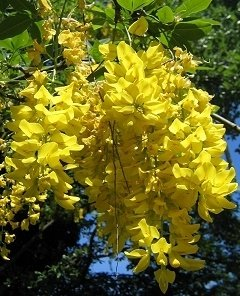
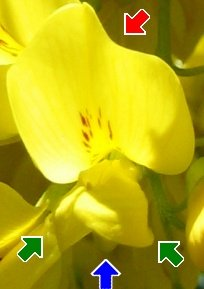

Der Goldregen blüht im Mai und Juni. Die Blüten werden von Bienen und Hummeln bestäubt.  |  Die Blüten erinnern an Schmetterlinge, daher nennen wir sie Schmetterlingsblüten. Ihre 5 Blütenkronblätter heißen Fahne (1), Flügel (2) und Schiffchen (2). |